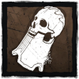
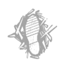

O ESPECTRO
Usando o Sino das Lamentações para ficar invisível, o Espectro rastreia a presa e ataca com pouco alarde. Ao ouvir o tocar fatídico do Sino, os Sobreviventes devem pensar rápido ou sofrer as consequências.
Especialista em atacar e sumir, o Espectro é adepto em
manter todo mundo ferido.
Sobre:
Raio de Terror: 32m
Velocidade: 4.6 m/s
Altura: Alto
Poder:
Sino das Lamentações

Toque o Sino das Lamentações para ficar invisível e perder o Raio de Terror. Embora o Espectro não possa atacar invisível, retirar a invisibilidade possibilita um bote letal capaz de ferir Sobreviventes desavisados.
Lembre-se: o Espectro fica um pouco mais fácil de enxergar de perto, e o Sino das Lamentações toca bem alto quando ele fica ou deixa de estar invisível.
VANTAGENS
Cão de Caça |
Poças de Sangue deixadas por Sobreviventes feridos brilham no chão, deixando mais fácil seguir o rastro. |
Predador |
Marcas deixadas por Sobreviventes aparecem mais próximas umas das outras, possibilitando um rastreamento mais fácil. |
Nascido das Sombras |
Amplie seu campo de visão para enxergar mais, facilitando o rastreamento de Sobreviventes discretos. |